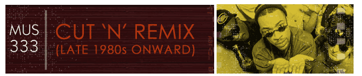
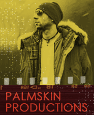

Simon Richmond began recording as Palmskin Productions in 1993 with occasional collaborator, saxophonist Chris Bowden. Palmskin Productions followed up their intial release with the album Remilixir (1996) and also a rack of compilations from 1994-2001, including Cursory EP and Shinda Shima (2001), Headz (1994), and Faces Z 1994-96 and Headz 2 B (1996).
"Palm Skin Productions specialize in darkside dub excursions," writes John Bush, "heavy on the downtempo breakbeats, jazzy flourishes and gut-bucket percussion" (Bush [n.d.]). However,"Spock With a Beard" (1993), which was released on the 1994 compilation The Rebirth of Cool, Volume 2, is a pretty straight-forward, high-energy jazz cut backed by a tight groove. It features saxophonist Chris Bowden who improvs over a frenetic groove set up by Simon Richmond and interspersed with classic samples from the original Star Trek's Capt James T. Kirk. The piece ends with a true circus-ride solo sax riff.
Listen to Palmskin Productions' "Spock With a Beard" (1993).